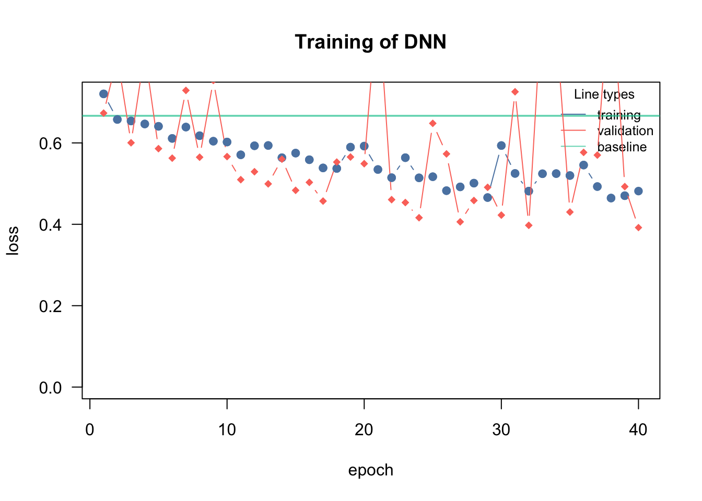

As we have seen today, many of the machine learning algorithms are distributed over several packages but the general machine learning pipeline is very similar for all models: feature engineering, feature selection, hyperparameter tuning and cross-validation.
Machine learning frameworks such as mlr3 or tidymodels provide a general interface for the ML pipeline, in particular the training and the hyperparameter tuning with nested CV. They support most ML packages/algorithms.
C.1 mlr3
The key features of mlr3 are:
All common machine learning packages are integrated into mlr3, you can easily switch between different machine learning algorithms.
A common ‘language’/workflow to specify machine learning pipelines.
Support for different cross-validation strategies.
Hyperparameter tuning for all supported machine learning algorithms.
The mlr3 package actually consists of several packages for different tasks (e.g. mlr3tuning for hyperparameter tuning, mlr3pipelines for data preparation pipes). But let’s start with the basic workflow:
'data.frame': 4687 obs. of 40 variables:
$ Neo.Reference.ID : int 3449084 3702322 3406893 NA 2363305 3017307 2438430 3653917 3519490 2066391 ...
$ Name : int NA 3702322 3406893 3082923 2363305 3017307 2438430 3653917 3519490 NA ...
$ Absolute.Magnitude : num 18.7 22.1 24.8 21.6 21.4 18.2 20 21 20.9 16.5 ...
$ Est.Dia.in.KM.min. : num 0.4837 0.1011 0.0291 0.1272 0.1395 ...
$ Est.Dia.in.KM.max. : num 1.0815 0.226 0.0652 0.2845 0.3119 ...
$ Est.Dia.in.M.min. : num 483.7 NA 29.1 127.2 139.5 ...
$ Est.Dia.in.M.max. : num 1081.5 226 65.2 284.5 311.9 ...
$ Est.Dia.in.Miles.min. : num 0.3005 0.0628 NA 0.0791 0.0867 ...
$ Est.Dia.in.Miles.max. : num 0.672 0.1404 0.0405 0.1768 0.1938 ...
$ Est.Dia.in.Feet.min. : num 1586.9 331.5 95.6 417.4 457.7 ...
$ Est.Dia.in.Feet.max. : num 3548 741 214 933 1023 ...
$ Close.Approach.Date : Factor w/ 777 levels "1995-01-01","1995-01-08",..: 511 712 472 239 273 145 428 694 87 732 ...
$ Epoch.Date.Close.Approach : num NA 1.42e+12 1.21e+12 1.00e+12 1.03e+12 ...
$ Relative.Velocity.km.per.sec: num 11.22 13.57 5.75 13.84 4.61 ...
$ Relative.Velocity.km.per.hr : num 40404 48867 20718 49821 16583 ...
$ Miles.per.hour : num 25105 30364 12873 30957 10304 ...
$ Miss.Dist..Astronomical. : num NA 0.0671 0.013 0.0583 0.0381 ...
$ Miss.Dist..lunar. : num 112.7 26.1 NA 22.7 14.8 ...
$ Miss.Dist..kilometers. : num 43348668 10030753 1949933 NA 5694558 ...
$ Miss.Dist..miles. : num 26935614 6232821 1211632 5418692 3538434 ...
$ Orbiting.Body : Factor w/ 1 level "Earth": 1 1 1 1 1 1 1 1 1 1 ...
$ Orbit.ID : int NA 8 12 12 91 NA 24 NA NA 212 ...
$ Orbit.Determination.Date : Factor w/ 2680 levels "2014-06-13 15:20:44",..: 69 NA 1377 1774 2275 2554 1919 731 1178 2520 ...
$ Orbit.Uncertainity : int 0 8 6 0 0 0 1 1 1 0 ...
$ Minimum.Orbit.Intersection : num NA 0.05594 0.00553 NA 0.0281 ...
$ Jupiter.Tisserand.Invariant : num 5.58 3.61 4.44 5.5 NA ...
$ Epoch.Osculation : num 2457800 2457010 NA 2458000 2458000 ...
$ Eccentricity : num 0.276 0.57 0.344 0.255 0.22 ...
$ Semi.Major.Axis : num 1.1 NA 1.52 1.11 1.24 ...
$ Inclination : num 20.06 4.39 5.44 23.9 3.5 ...
$ Asc.Node.Longitude : num 29.85 1.42 170.68 356.18 183.34 ...
$ Orbital.Period : num 419 1040 682 427 503 ...
$ Perihelion.Distance : num 0.794 0.864 0.994 0.828 0.965 ...
$ Perihelion.Arg : num 41.8 359.3 350 268.2 179.2 ...
$ Aphelion.Dist : num 1.4 3.15 2.04 1.39 1.51 ...
$ Perihelion.Time : num 2457736 2456941 2457937 NA 2458070 ...
$ Mean.Anomaly : num 55.1 NA NA 297.4 310.5 ...
$ Mean.Motion : num 0.859 0.346 0.528 0.843 0.716 ...
$ Equinox : Factor w/ 1 level "J2000": 1 1 NA 1 1 1 1 1 1 1 ...
$ Hazardous : int 0 0 0 1 1 0 0 0 1 1 ...
Let’s drop time, name and ID variable and create a classification task:
data = nasa %>%select(-Orbit.Determination.Date,-Close.Approach.Date, -Name, -Neo.Reference.ID)data$Hazardous =as.factor(data$Hazardous)# Create a classification task.task = TaskClassif$new(id ="nasa", backend = data,target ="Hazardous", positive ="1")
Create a generic pipeline of data transformation (imputation \(\rightarrow\) scaling \(\rightarrow\) encoding of categorical variables):
set.seed(123)# Let's create the preprocessing graph.preprocessing =po("imputeoor") %>>%po("scale") %>>%po("encode") # Run the task.transformed_task = preprocessing$train(task)[[1]]transformed_task$missings()
result = mlr3::resample(transformed_task, EN, resampling = cv10, store_models =TRUE)# Calculate the average AUC of the holdouts.result$aggregate(measurement)
Very cool! Preprocessing + 10-fold cross-validation model evaluation in a few lines of code!
Let’s create the final predictions:
pred =sapply(1:10, function(i) result$learners[[i]]$predict(transformed_task,row_ids = (1:nrow(data))[is.na(data$Hazardous)])$data$prob[, "1", drop =FALSE])dim(pred)predictions =apply(pred, 1, mean)
But we are still not happy with the results, let’s do some hyperparameter tuning!
C.1.2 mlr3 - Hyperparameter Tuning
With mlr3, we can easily extend the above example to do hyperparameter tuning within nested cross-validation (the tuning has its own inner cross-validation).
Print the hyperparameter space of our glmnet learner:
EN$param_set
<ParamSet>
Warning: Unknown argument 'on' has been passed.
Key: <id>
id class lower upper nlevels
<char> <char> <num> <num> <num>
1: alpha ParamDbl 0 1 Inf
2: big ParamDbl -Inf Inf Inf
3: devmax ParamDbl 0 1 Inf
4: dfmax ParamInt 0 Inf Inf
5: eps ParamDbl 0 1 Inf
6: epsnr ParamDbl 0 1 Inf
7: exact ParamLgl NA NA 2
8: exclude ParamInt 1 Inf Inf
9: exmx ParamDbl -Inf Inf Inf
10: fdev ParamDbl 0 1 Inf
11: gamma ParamDbl -Inf Inf Inf
12: intercept ParamLgl NA NA 2
13: lambda ParamUty NA NA Inf
14: lambda.min.ratio ParamDbl 0 1 Inf
15: lower.limits ParamUty NA NA Inf
16: maxit ParamInt 1 Inf Inf
17: mnlam ParamInt 1 Inf Inf
18: mxit ParamInt 1 Inf Inf
19: mxitnr ParamInt 1 Inf Inf
20: newoffset ParamUty NA NA Inf
21: nlambda ParamInt 1 Inf Inf
22: offset ParamUty NA NA Inf
23: penalty.factor ParamUty NA NA Inf
24: pmax ParamInt 0 Inf Inf
25: pmin ParamDbl 0 1 Inf
26: prec ParamDbl -Inf Inf Inf
27: relax ParamLgl NA NA 2
28: s ParamDbl 0 Inf Inf
29: standardize ParamLgl NA NA 2
30: standardize.response ParamLgl NA NA 2
31: thresh ParamDbl 0 Inf Inf
32: trace.it ParamInt 0 1 2
33: type.gaussian ParamFct NA NA 2
34: type.logistic ParamFct NA NA 2
35: type.multinomial ParamFct NA NA 2
36: upper.limits ParamUty NA NA Inf
id class lower upper nlevels
default
<list>
1: 1
2: 9.9e+35
3: 0.999
4: <NoDefault>\n Public:\n clone: function (deep = FALSE) \n initialize: function ()
5: 1e-06
6: 1e-08
7: FALSE
8: <NoDefault>\n Public:\n clone: function (deep = FALSE) \n initialize: function ()
9: 250
10: 1e-05
11: 1
12: TRUE
13: <NoDefault>\n Public:\n clone: function (deep = FALSE) \n initialize: function ()
14: <NoDefault>\n Public:\n clone: function (deep = FALSE) \n initialize: function ()
15: <NoDefault>\n Public:\n clone: function (deep = FALSE) \n initialize: function ()
16: 100000
17: 5
18: 100
19: 25
20: <NoDefault>\n Public:\n clone: function (deep = FALSE) \n initialize: function ()
21: 100
22:
23: <NoDefault>\n Public:\n clone: function (deep = FALSE) \n initialize: function ()
24: <NoDefault>\n Public:\n clone: function (deep = FALSE) \n initialize: function ()
25: 1e-09
26: 1e-10
27: FALSE
28: 0.01
29: TRUE
30: FALSE
31: 1e-07
32: 0
33: <NoDefault>\n Public:\n clone: function (deep = FALSE) \n initialize: function ()
34: <NoDefault>\n Public:\n clone: function (deep = FALSE) \n initialize: function ()
35: <NoDefault>\n Public:\n clone: function (deep = FALSE) \n initialize: function ()
36: <NoDefault>\n Public:\n clone: function (deep = FALSE) \n initialize: function ()
default
parents value
<list> <list>
1:
2:
3:
4:
5:
6:
7:
8:
9:
10:
11: relax
12:
13:
14:
15:
16:
17:
18:
19:
20:
21:
22:
23:
24:
25:
26:
27:
28:
29:
30:
31:
32:
33:
34:
35:
36:
parents value
Define the hyperparameter space of the random forest:
Now we can wrap it normally into the 10-fold cross-validated setup as done previously:
# Calculate the average AUC of the holdouts.result$aggregate(measurement)
classif.auc
0.6767554
Let’s create the final predictions:
pred =sapply(1:3, function(i) result$learners[[i]]$predict(transformed_task,row_ids = (1:nrow(data))[is.na(data$Hazardous)])$data$prob[, "1", drop =FALSE])dim(pred)predictions =apply(pred, 1, mean)
C.2 Exercises
C.2.1 Tuning Regularization
Question: Hyperparameter tuning - Titanic dataset
Tune architecture
Tune training parameters (learning rate, batch size) and regularization
Hints
cito has a feature to automatically tune hyperparameters under Cross Validation!
passing tune(...) to a hyperparameter will tell cito to tune this specific hyperparameter
the tuning = config_tuning(...) let you specify the cross-validation strategy and the number of hyperparameters that should be tested (steps = number of hyperparameter combinations that should be tried)
after tuning, cito will fit automatically a model with the best hyperparameters on the full data and will return this model
Minimal example with the iris dataset:
library(cito)df = irisdf[,1:4] =scale(df[,1:4])model_tuned =dnn(Species~., loss ="softmax",data = iris,lambda =tune(lower =0.0, upper =0.2), # you can pass the "tune" function to a hyerparametertuning =config_tuning(CV =3, steps =20L) )# tuning resultsmodel_tuned$tuning# model_tuned is now already the best model!
library(EcoData)library(dplyr)library(missRanger)data(titanic_ml)data = titanic_mldata = data %>%select(survived, sex, age, fare, pclass)data[,-1] =missRanger(data[,-1], verbose =0)data_sub = data %>%mutate(age = scales::rescale(age, c(0, 1)),fare = scales::rescale(fare, c(0, 1))) %>%mutate(sex =as.integer(sex) -1L,pclass =as.integer(pclass -1L))data_new = data_sub[is.na(data_sub$survived),] # for which we want to make predictions at the enddata_obs = data_sub[!is.na(data_sub$survived),] # data with known responsemodel =dnn(survived~., hidden =c(10L, 10L), # changeactivation =c("selu", "selu"), # changeloss ="binomial", lr =0.05, #changevalidation =0.2,lambda =0.001, # changealpha =0.1, # changelr_scheduler =config_lr_scheduler("reduce_on_plateau", patience =10, factor =0.9),data = data_obs, epochs =40L, verbose =TRUE, plot=TRUE)
Loss at epoch 1: training: 0.720, validation: 0.673, lr: 0.05000

Loss at epoch 2: training: 0.658, validation: 0.811, lr: 0.05000
Loss at epoch 3: training: 0.654, validation: 0.600, lr: 0.05000
Loss at epoch 4: training: 0.647, validation: 0.824, lr: 0.05000
Loss at epoch 5: training: 0.641, validation: 0.586, lr: 0.05000
Loss at epoch 6: training: 0.611, validation: 0.563, lr: 0.05000
Loss at epoch 7: training: 0.639, validation: 0.729, lr: 0.05000
Loss at epoch 8: training: 0.618, validation: 0.565, lr: 0.05000
Loss at epoch 9: training: 0.604, validation: 0.754, lr: 0.05000
Loss at epoch 10: training: 0.602, validation: 0.566, lr: 0.05000
Loss at epoch 11: training: 0.571, validation: 0.510, lr: 0.05000
Loss at epoch 12: training: 0.593, validation: 0.529, lr: 0.05000
Loss at epoch 13: training: 0.594, validation: 0.499, lr: 0.05000
Loss at epoch 14: training: 0.564, validation: 0.560, lr: 0.05000
Loss at epoch 15: training: 0.575, validation: 0.484, lr: 0.05000
Loss at epoch 16: training: 0.559, validation: 0.503, lr: 0.05000
Loss at epoch 17: training: 0.539, validation: 0.457, lr: 0.05000
Loss at epoch 18: training: 0.537, validation: 0.553, lr: 0.05000
Loss at epoch 19: training: 0.590, validation: 0.565, lr: 0.05000
Loss at epoch 20: training: 0.592, validation: 0.549, lr: 0.05000
Loss at epoch 21: training: 0.535, validation: 0.962, lr: 0.05000
Loss at epoch 22: training: 0.515, validation: 0.461, lr: 0.05000
Loss at epoch 23: training: 0.564, validation: 0.453, lr: 0.05000
Loss at epoch 24: training: 0.514, validation: 0.416, lr: 0.05000
Loss at epoch 25: training: 0.517, validation: 0.648, lr: 0.05000
Loss at epoch 26: training: 0.483, validation: 0.573, lr: 0.05000
Loss at epoch 27: training: 0.492, validation: 0.406, lr: 0.05000
Loss at epoch 28: training: 0.501, validation: 0.458, lr: 0.05000
Loss at epoch 29: training: 0.466, validation: 0.491, lr: 0.05000
Loss at epoch 30: training: 0.594, validation: 0.423, lr: 0.05000
Loss at epoch 31: training: 0.525, validation: 0.726, lr: 0.05000
Loss at epoch 32: training: 0.482, validation: 0.397, lr: 0.05000
Loss at epoch 33: training: 0.524, validation: 0.965, lr: 0.05000
Loss at epoch 34: training: 0.525, validation: 0.885, lr: 0.05000
Loss at epoch 35: training: 0.520, validation: 0.430, lr: 0.05000
Loss at epoch 36: training: 0.546, validation: 0.577, lr: 0.05000
Loss at epoch 37: training: 0.493, validation: 0.570, lr: 0.05000
Loss at epoch 38: training: 0.465, validation: 1.023, lr: 0.05000
Loss at epoch 39: training: 0.470, validation: 0.493, lr: 0.05000
Loss at epoch 40: training: 0.482, validation: 0.392, lr: 0.05000
# Predictions:predictions =predict(model, newdata = data_new, type ="response") # change prediction type to response so that cito predicts probabilitieswrite.csv(data.frame(y = predictions[,1]), file ="Max_titanic_dnn.csv")
C.2.2 Bonus: mlr3
Task: Use mlr3 for the titanic dataset
Use mlr3 to tune glmnet for the titanic dataset using nested CV
Submit single predictions and multiple predictions
If you need help, take a look at the solution, go through it line by line and try to understand it.
Prepare data
data = titanic_ml %>%select(-name, -ticket, -name, -body)data$pclass =as.factor(data$pclass)data$sex =as.factor(data$sex)data$survived =as.factor(data$survived)# Change easy things manually:data$embarked[data$embarked ==""] ="S"# Fill in "empty" values.data$embarked =droplevels(as.factor(data$embarked)) # Remove unused levels ("").data$cabin = (data$cabin !="") *1# Dummy code the availability of a cabin.data$fare[is.na(data$fare)] =mean(data$fare, na.rm =TRUE)levels(data$home.dest)[levels(data$home.dest) ==""] ="unknown"levels(data$boat)[levels(data$boat) ==""] ="none"# Create a classification task.task = TaskClassif$new(id ="titanic", backend = data,target ="survived", positive ="1")task$missings()
survived age boat cabin embarked fare home.dest parch
655 263 0 0 0 0 0 0
pclass sex sibsp
0 0 0
# Let's create the preprocessing graph.preprocessing =po("imputeoor") %>>%po("scale") %>>%po("encode") # Run the task.transformed_task = preprocessing$train(task)[[1]]transformed_task$set_row_roles((1:nrow(data))[is.na(data$survived)], "holdout")